Étude de cas
DeliverPro, plateforme de gestion de livraison
Une plateforme composée d'un back-office desktop, d'une API métier et d'une application Flutter pour centraliser les commandes, les partenaires et les finances.
Informations rapides
- Type de projet
- Plateforme de gestion de livraison
- Mon rôle
- Information à compléter
- Durée
- Information à compléter
- Statut
- Information à compléter
- Technologies
- React, Vite, Electron, Django REST, PostgreSQL, Flutter et JWT
Contexte
DeliverPro a été conçu pour suivre une activité de livraison depuis une seule interface, sans alterner entre plusieurs tableaux, fichiers ou espaces de travail. L'administrateur dispose d'une vision de l'activité, tandis que l'API métier alimente le back-office et les parcours mobiles administrateur et livreur.
Problème rencontré
Centraliser les opérations quotidiennes et les indicateurs financiers, puis partager la même logique métier entre le poste administrateur et l'application mobile.
Mon rôle
Information à compléter
Solution
Un back-office React + Electron pour l'administration, une API Django REST sécurisée par JWT et une application Flutter pour les parcours administrateur et livreur.
Technologies
React, Vite, Electron, Django, Django REST Framework, PostgreSQL, Flutter, JWT et création d'un paquet Windows.
Architecture et fonctionnement
Le produit repose sur trois briques reliées par une même API.
Back-office desktop administrateur
React + Electron pour gérer les commandes, les entreprises, les utilisateurs, les finances et les exports PDF depuis un poste fixe.
API métier Django
Authentification JWT, règles de gestion, tableaux de bord, transactions, objectifs, exports et données partagées.
Application Flutter terrain
Parcours administrateur et livreur avec connexion sécurisée, suivi des commandes, finances, entreprises et opérations mobiles.
Flux unifié
Le desktop et l'application mobile utilisent le même backend pour synchroniser les opérations et éviter les doubles saisies.
API REST Django
Le backend porte les droits d'accès, les données PostgreSQL, les calculs financiers, les tableaux de bord, l'historique, l'export PDF et les ressources métier.
Authentification et sécurité
Jetons d'accès et de rafraîchissement JWT, déconnexion, profil, changement de mot de passe et permissions administrateur et livreur.
Ressources métier
CRUD des utilisateurs, entreprises, commandes, transactions, objectifs et journaux d'audit, avec filtres, pagination et relations.
Services exposés
Tableaux de bord, alertes budgétaires, paiements, export PDF, statistiques par entreprise et automatisations métier.
Exploitation et qualité
Swagger, tests API sur les cas critiques, configuration de déploiement, CORS et WebSocket en temps réel.
/api/auth/login/Authentification JWT et ouverture de session.
/api/dashboard/Synthèse administrateur des revenus, dépenses, commandes et indicateurs.
/api/dashboard/livreur/Vue adaptée au rôle du livreur et à ses commandes.
/api/commandes/Gestion des commandes, statuts et cycle de livraison.
/api/transactions/Journal financier, revenus, dépenses et historique.
/api/export/pdf/Rapports filtrés par période, entreprise, livreur et type de contenu.
Fonctionnalités principales
- Tableau de bord global avec indicateurs financiers et visualisations.
- Gestion des commandes avec recherche, filtres et suivi par statut.
- Administration des utilisateurs et des rôles.
- Gestion des entreprises partenaires et de leurs performances.
- Suivi des revenus, dépenses, bénéfice net et transactions.
- Objectifs, budget et seuils mensuels.
- Export PDF filtré.
- Authentification JWT partagée.
- Application Flutter pour les parcours administrateur et livreur.
- Version desktop Windows.
Difficultés et décisions techniques
- Centraliser la logique métier dans une API Django REST commune aux interfaces desktop et mobile.
- Utiliser JWT et des permissions distinctes pour les rôles administrateur et livreur.
- Associer React à Electron pour proposer une version desktop Windows.
- Conserver PostgreSQL comme source de données commune afin d'éviter les doubles saisies.
Difficultés rencontrées : Information à compléter
Captures d'écran
Back-office desktop
Interface sombre, navigation latérale et écrans spécialisés pour chaque besoin métier.
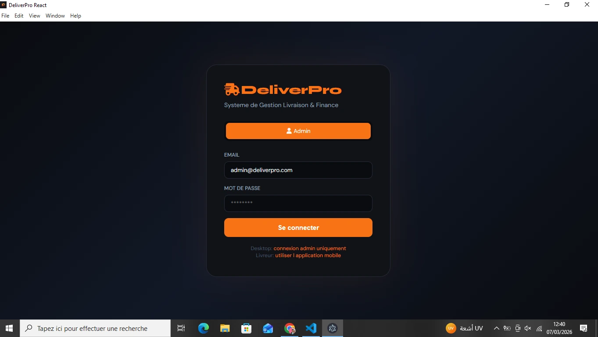
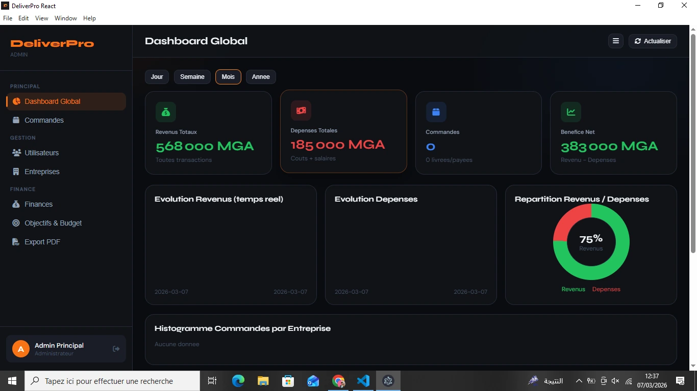
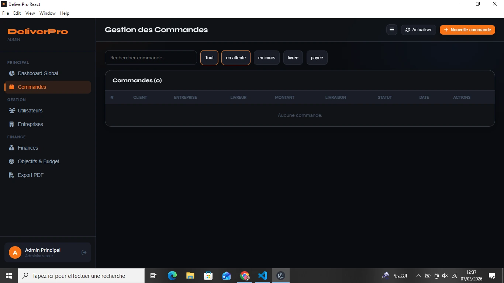
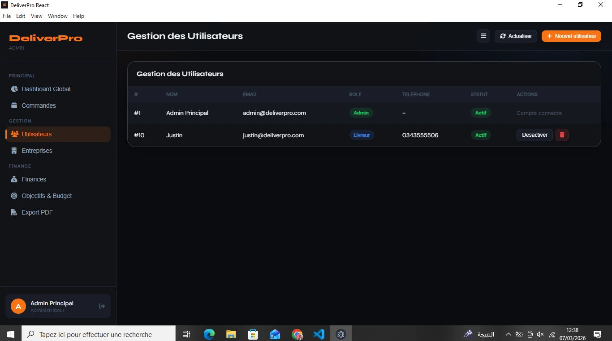
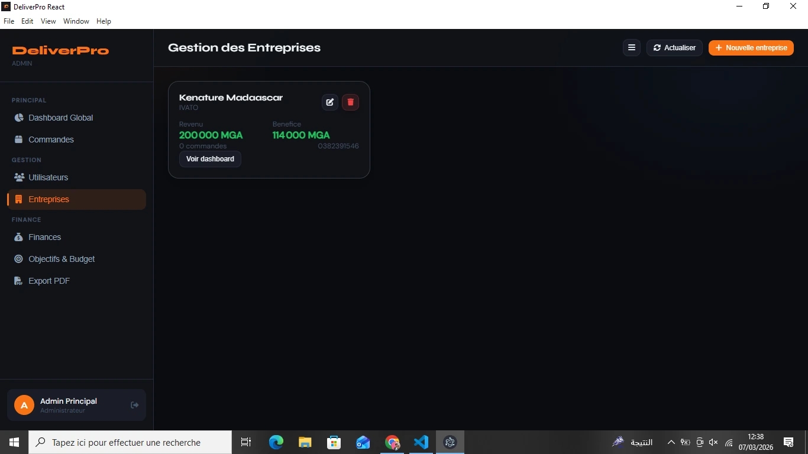
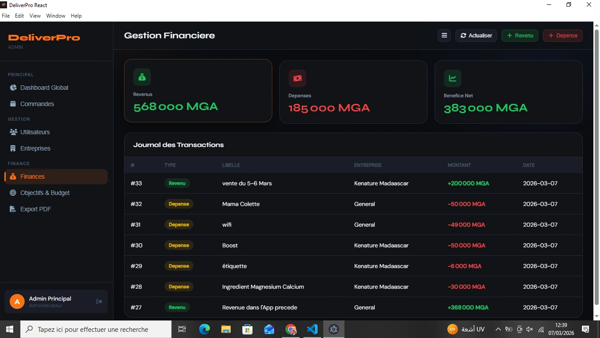
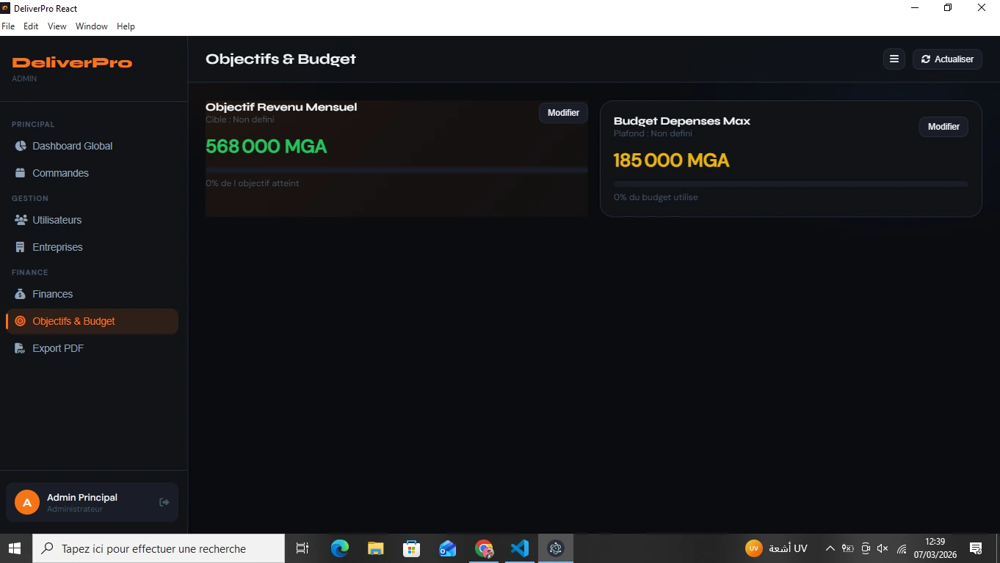
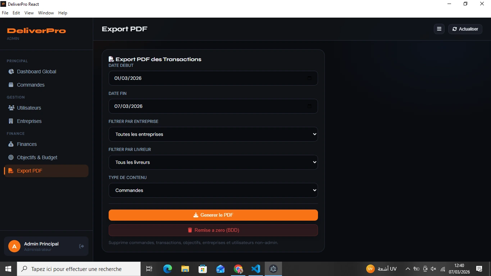
Application mobile livreur
Lecture des commandes assignées, des statuts de livraison et des paiements encaissés.
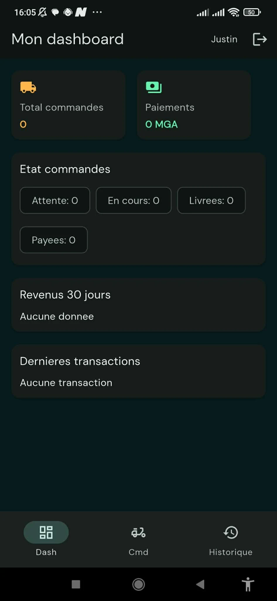
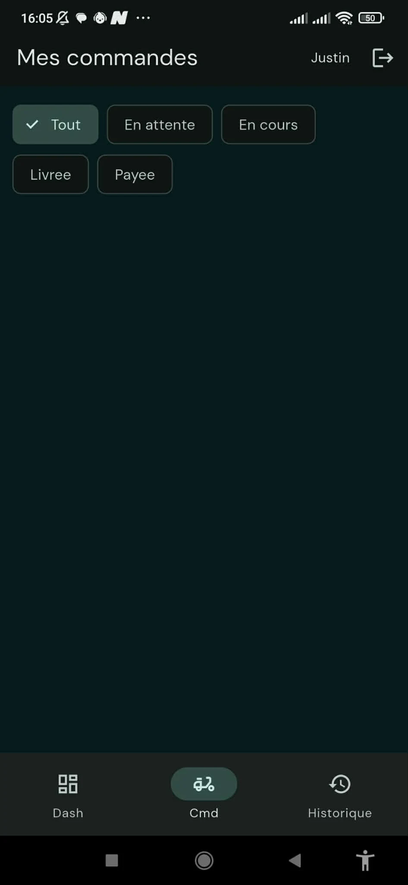
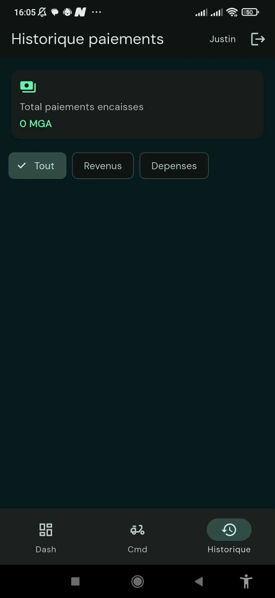
Application mobile administrateur
Gestion mobile des commandes, des partenaires, des finances et des exports.
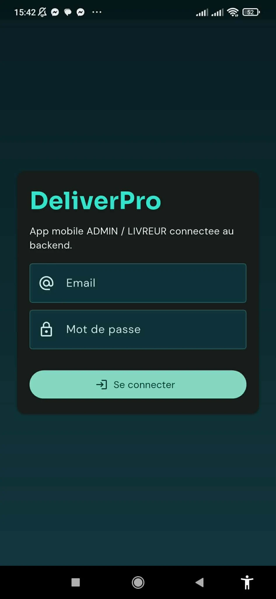
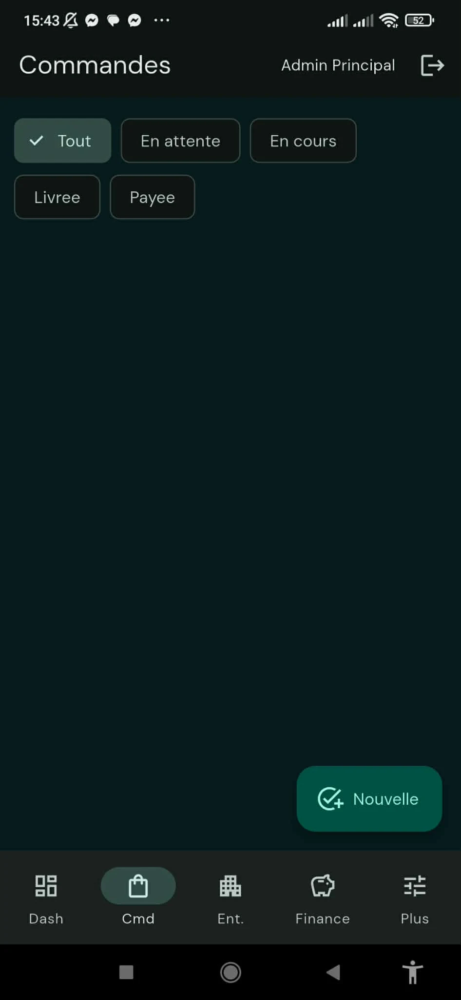
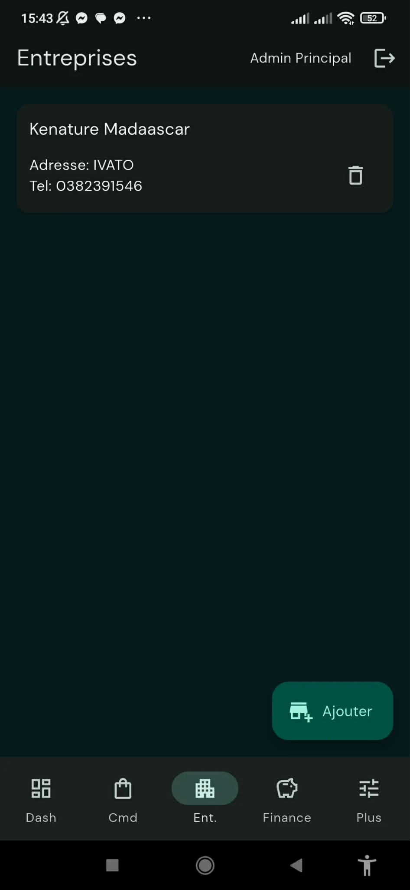
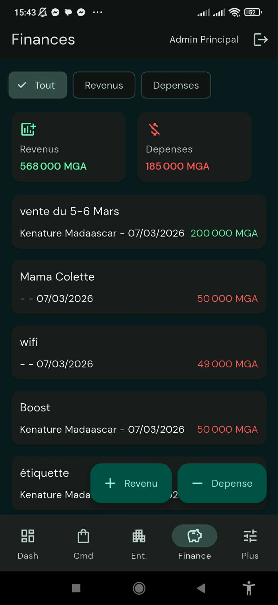
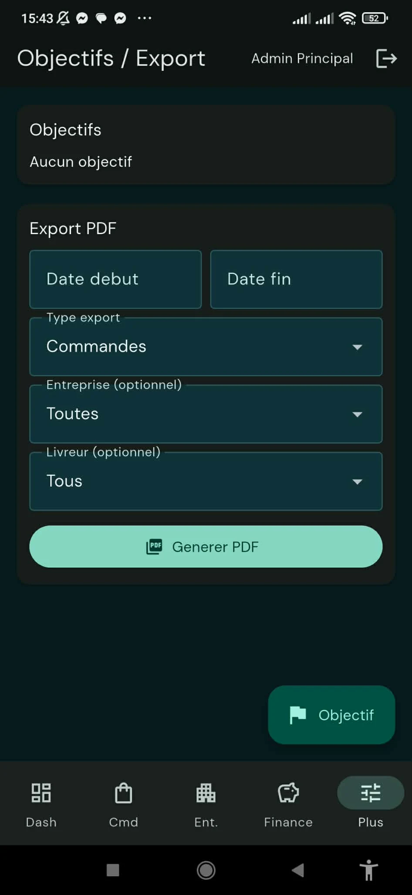
Résultats et apprentissages
Résultat : les commandes, les utilisateurs, les entreprises et les finances sont regroupés dans un même environnement de travail, du back-office jusqu'au livreur.
Le projet transforme des données opérationnelles en informations exploitables grâce à une interface d'administration, une API réutilisable et une application mobile destinée au terrain.
Apprentissages personnels : Information à compléter
Code et démonstration
Le code source n'est pas public pour des raisons de confidentialité professionnelle.